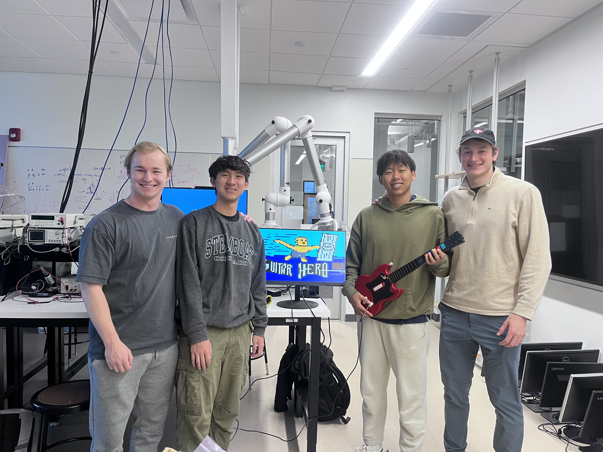

Guitar Hero on FPGA
A Hardware Driven Rhythm Game in VHDL
Project Summary
My group developed a real-time Guitar Hero game on an FPGA using VHDL, integrating VGA graphics, audio synthesis, and a custom guitar controller input system. I designed the full game logic and hardware VGA renderer that draws falling notes based on screen position, plus a key comparison unit that checks player inputs against expected notes each frame. The result is a fully hardware-driven game loop that runs smoothly on the FPGA with no CPU or software involved.
My Contributions
Game Logic & VGA Renderer
- Falling block/note rendering based on screen position
- Key comparison unit checking inputs each frame
- Score calculation converting note accuracy to BCD
Audio Synthesis
- Real-time square wave tone generation
- 5 buttons mapped to different frequencies
- Counter-based oscillator for audio signal
- Works as a standalone instrument!
The Team

Left to right: Cooper Bailey, Michael Chou, Paul Wang, and Max Harrington
From Student to TA
This was the final project for Tufts ES4 (Digital Logic and Circuits), which I am now a teaching assistant for. I'm currently guiding a group through their own implementation of Guitar Hero in SystemVerilog.